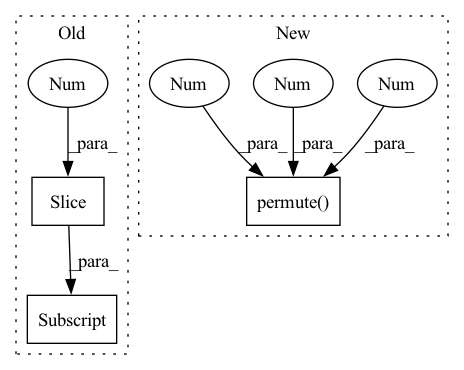

Pattern ID :3093

Before Change
// Unique deltas
// dimensions - quantiles, segments (+ 1)
deltas = self.trend_deltas - torch.cat(
(self.trend_k0.unsqueeze(1), self.trend_deltas[:, 0:-1]), dim=1
)
else:
deltas = self.trend_deltas
After Change
// dimensions - quantiles, 1, segments
gammas = -self.trend_changepoints_t[1:] * deltas[:, :, 1:]
// dimensions - batch_size, n_forecasts, quantiles
m_t = torch.sum(past_next_changepoint.unsqueeze(dim=2) * gammas.permute(1, 0, 2).unsqueeze(1), dim=-1)
if not self.segmentwise_trend:
m_t = m_t.detach()
In pattern: SUPERPATTERN
Frequency: 4
Non-data size: 3
Instances
Fragment ID: 11933879
Project Name: ourownstory/neural_prophet
Commit Name: 4715dd35f4374c784fff516a02658ec26a55670b
Time: 2022-10-10
Author: alfonso.garcia.decorral@gmail.com
File Name: neuralprophet/time_net.py
M Class Name: TimeNet
N Class Name: TimeNet
M Method Name: _piecewise_linear_trend(3)
N Method Name: _piecewise_linear_trend(3)
M Parent Class: nn.Module
N Parent Class: nn.Module
M File Name: neuralprophet/time_net.py
N File Name: neuralprophet/time_net.py
M Start Line: 493
M End Line: 597
N Start Line: 496
N End Line: 589
'>
Before Change
// k_t = k_t(current_segment, previous_segment, sample metadata)
// TO DO global-local-trend
previous_deltas_t = torch.unsqueeze(
torch.sum(past_next_changepoint[:, 0, :] * trend_deltas_by_sample[:, :-1], dim=1), dim=1
)
k_t = k_t + previous_deltas_t
elif self.config_trend.trend_global_local == "global":
After Change
meta_name_tensor_one_hot.unsqueeze(dim=0).unsqueeze(dim=-1) * self.trend_m.unsqueeze(dim=1), dim=2
)
m_t = torch.sum(
current_segment.unsqueeze(dim=2) * m_t_0.permute(1, 0, 2).unsqueeze(dim=1),
dim=-1,
)
elif self.config_trend.trend_global_local == "global":
'>
Fragment ID: 11933990
Project Name: ourownstory/neural_prophet
Commit Name: 0be013ea4f21af9f7a080102eae7eec8d05966ff
Time: 2022-09-27
Author: alfonso.garcia.decorral@gmail.com
File Name: neuralprophet/time_net.py
M Class Name: TimeNet
N Class Name: TimeNet
M Method Name: _piecewise_linear_trend(3)
N Method Name: _piecewise_linear_trend(3)
M Parent Class: nn.Module
N Parent Class: nn.Module
M File Name: neuralprophet/time_net.py
N File Name: neuralprophet/time_net.py
M Start Line: 483
M End Line: 614
N Start Line: 482
N End Line: 611
'>
Before Change
def forward(self, coefs: Tensor) -> Tensor:
// [B, T, F, O*2] -> [B, O, T, F, 2]
coefs = coefs.view(*coefs.shape[:-1], -1, 2)
coefs = coefs.permute(0, 3, 1, 2, 4)
return coefs
After Change
def forward(self, coefs: Tensor) -> Tensor:
// [B, T, F, O*2] -> [B, O, T, F, 2]
coefs = coefs.unflatten(-1, (-1, 2)).permute(0, 3, 1, 2, 4)
return coefs
class DfDecoder(nn.Module):
'>
Fragment ID: 11933875
Project Name: rikorose/deepfilternet
Commit Name: 3e554333e5a3f0802f8df5a00e07de517dfe6561
Time: 2022-10-18
Author: h.schroeter@pm.me
File Name: DeepFilterNet/df/deepfilternet2.py
M Class Name: DfOutputReshapeMF
N Class Name: DfOutputReshapeMF
M Method Name: forward(2)
N Method Name: forward(2)
M Parent Class: nn.Module
N Parent Class: nn.Module
M File Name: DeepFilterNet/df/deepfilternet2.py
N File Name: DeepFilterNet/df/deepfilternet2.py
M Start Line: 271
M End Line: 272
N Start Line: 289
N End Line: 289
'>
Before Change
n_dims = input.dim()
dims = list(range(n_dims))
input_permuted = input.permute(1, 0, *dims[2:])
left, right = self.left, self.right
After Change
input_left, input_right = torch.abs(input_permuted[left]), torch.abs(input_permuted[right])
loss = - F.cosine_similarity(input_left, input_right, dim=2, eps=self.eps)
loss = loss.permute(1, 0, 2).contiguous() / self.n_combinations
loss = loss.sum(dim=2)
loss = loss.mean(dim=1)
'>
Fragment ID: 11933981
Project Name: tky823/dnn-based_source_separation
Commit Name: 9ae9e0e761dbe8b27ced4dbd676bf9fdada629f9
Time: 2021-08-12
Author: 40362510+tky823@users.noreply.github.com
File Name: egs/musdb18/meta-tasnet/src/adhoc_criterion.py
M Class Name: MultiDissimilarityLoss
N Class Name: MultiDissimilarityLoss
M Method Name: forward(3)
N Method Name: forward(3)
M Parent Class: nn.Module
N Parent Class: nn.Module
M File Name: egs/musdb18/meta-tasnet/src/adhoc_criterion.py
N File Name: egs/musdb18/meta-tasnet/src/adhoc_criterion.py
M Start Line: 28
M End Line: 39
N Start Line: 51
N End Line: 60